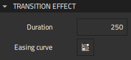
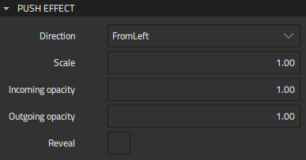

Applying Effects to Transitions
You can apply effects, such as fade, move, or push to transitions between flow items. A fade effect makes the first flow item appear to fade out, while the next flow item fades in. A move effect makes the second flow item appear to move in over the first flow item, while the push effect appears to make a flow item push out the previous one. You can also design and use custom effects.
The transition direction determines the direction the new flow item appears from: left, right, top, bottom. You can set the duration of the effect and attach an easing curve to the effect.
To add effects:
- Select a transition line in the 2D view.
- In the context menu, select Flow > Assign Flow Effects, and then select the effect to apply.
- In Properties, modify the properties of the effect.
To edit effect properties later, select a transition, and then select Flow > Select Effect in the context menu.
Flow Effect Properties
You can specify basic properties for a Flow Effect component in the Type and ID fields in the Component section in the Properties view.

You can set the duration and easing curve of all flow effects:
- In the Duration field, specify the duration of the effect.
- Select the
 button to open Easing Curve Editor for attaching an easing curve to the effect.
button to open Easing Curve Editor for attaching an easing curve to the effect.
For a move or push effect, you can set some additional properties:

- In the Direction field, specify the direction that the target Flow Item appears from: left, right, top, or bottom.
- In the Scale field, set scaling for the effect.
- In the Incoming opacity and Outgoing opacity fields, specify the opacity of the effect as a number between 0 and 1.
- Select the Reveal check box to reveal the Flow Item where the transition starts.